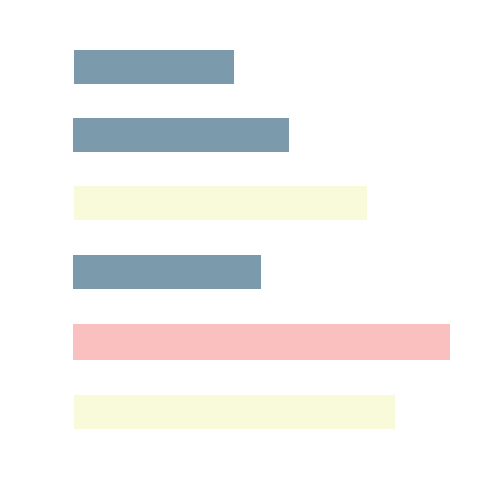
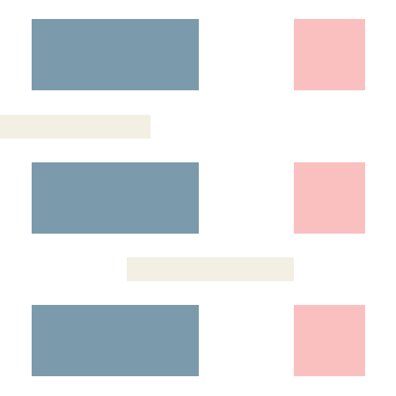

Computer Vision July - August 2017 Product Security in Additive Manufacturing OpenCV Python Mainly work on Image Processing. Develop a process of pattern recognition and matching to identify the authenticity of a product. Visualize mismatching regions for authentication process. July - August 2015 Color - Based Object Tracking Using Webcams OpenCV Python Develop a real-time object tracking system based on color. Enhance precision with noise removal. Enable mouse selection for object target. Generate immediate video feed for further analyzation. Web Development February 2018

Financial Budget List: Front-end Development HTML CSS JavaScript ejs A project for Columbia DevFest 2018. Work on a webapp designed to assist students in scheduling their financial budgets. Develop front-end design from scratch. Help back-end to setup web framework. February 2018 NYU SelfDrive: Front-end Development HTML CSS Set up website on GitHub Pages. Schedule collaboration through GitHub. Restructure website template for usage. Complete most of the work in two days. July 2017 - Present Personal Website Design & Development HTML CSS JavaScript Set up personal portfolio website on GitHub Pages. Design website layout and contents. Implement and update the website routinely. June - July 2017

PlanNYU: Front-end Improvement HTML CSS Photoshop Sketch a series of user-interface enhancement. Implement the idea after group discussion to improve the front end design for the web page. Math Modeling November 2014 Predicting the Spread of Disease MATLAB Improve SIR epidemic model with multi-parameters. Visualize the spread of disease using graphics. Complete the research paper within 36 hours with 3 teammates.